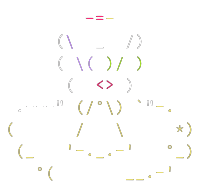

About me
My name is Vinícius Mendes aka Yabamiah. I'm 18 years old and i'm currently focused on my Software Engineering degree at College of Gama of University of Brasilia's, also as a trainee at junior company EletronJun and working on personal projects.
Interests
I love Linux, free open-source software, CLI, TUI, ASCII arts and customizing my development environment. In my personal and academic projects i'm using C/C++, Go, Python and Shell. I have a lot of interest and curiosity in the areas of embedded, software development and firmware. I'm currently very interested in modern languages and i've been studying some like Go and Julia. Currently my development environment is composed of Void Linux, XFCE, Vim and VScode.
Curiosities
I love working with the land and plants, i'm trying to make my garden, i tend to us gardening as a way to create healthy routines. I have a lot of admiration for trees and the native fauna of the cerrado.
I'm an assiduous reader of manga, i mainly read the seinen, comedy and psychological genres. My favorite mangas are Berserk, Great Teacher Onizuka - GTO, Holyland e Rainbow: Nisha Rokubou no Shichinin.Contacts
Chats: telegram
Email: viniciusmendes1019@gmail.com

This site is licensed under CC BY-SA 4.0 by Vinícius Mendes.
Chats: telegram
Email: viniciusmendes1019@gmail.com